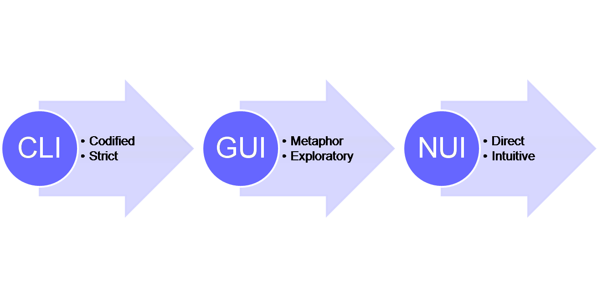
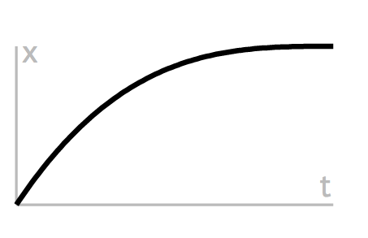
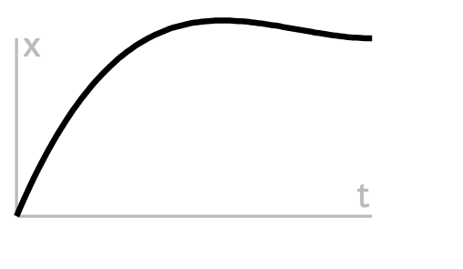

Algorithms for Animation
Simple formulas to
activate
personalize
inform with
brand
enhance
UI
one part psychology
Meta purpose of this talk
Address the elephant in the room of our industry, design v developer
How many of you consider yourselves a designer? Developer? Hybrid?
Designing animations for software has always been a bit decoupled from the implementation.
Developers can benefit by understanding basic principles behind animation design
You can play a role in adding life to the interface
Early animation techniques were developed by Windsor McCay
sequences of drawings by the best designers created key animations
lackeys would draw the frames in between
Instead of a human making the natural transitions betwee key frames, we use software to be the "inbetweener", which uses physics and math.
Disney adopted this technique and came up with the "12 principles of animation design"
Movement creates life
Gertie the Dinosaur (Winsor McCay, 1914)
Before Mickey Mouse, before the flintstones, before the illustrious ren and stimpy
irony is that movies at the time had much jankier movements than cartoons. Tweening could make Gertie actually feel more real than chaplan
We have an emotional response to things that move. and emotion goes a long way to helping us make decisions
We evolved to use motions as a primary driver, for good reason.
Changes in our environment (like here) as well as subtle changes in faces.
The reason is that it takes time (at least 0.1 seconds) for the rational cortex to get going.
Common decisions may use some logic, but the main driving force is emotion
Users have no patience to wait for your UI to load, and once it does they want to make a decision in less than .1 seconds
Animations are cognitive aids
Animation is just motion on a screen
We can use animation to help users make decision much more quickly than just a bunch of text on a page
The tricky part is that we are also very sensitive to motion. So it needs to feel right.
Affordance, percieved affordance & signifiers
What does it mean to "feel" right?
We will evaluate software on how close it feels to what we know.
It is very much based in reality and in our interaction with normal object in our daily lives
Things have understood physical properties which we can intuit to mean certain things. this is affordance.
Perceived affordance is an abstraction - it is skeumorphism, leather binding on a digital interface
A signifier is a signal that indicates how an object can be used
So using visual metaphors is one way to indicate deletion but motion is another.
It is easily perceived & interpreted
It can be discovered
Affordance of screens is change

We expect our screens to change, to update and to inform us with that update
We abstract the changes that a machine is taking with the user interface, otherwise we would all just be back writing assembly code
The GUI was the first level of abstraction, also known as WIMPs (windows, icons, menus, pointer)
The next level is NUI or natural, using our fingers for touching, squishing, stretching
The next level is coming with AR and VR
Motion detection
Basic tenants to consider for motion in interfaces
Humans have crap perception of color in their peripheral vision but are great at sensing movement.
Elements getting animated in the periphery
assistive and descriptive animation
animation that creates emotional connection to a brand
Allows the user to make a quick decision based on an emotional response to an animation
Give quick feedback
It’s nice to feel like things are reacting to what you’re doing.
Nav igation
Animated transitions between screens convey logical relationships and create an understood "map" of an interface from how things enter and exit a screen.
death of breadcrumbs
don't ask someone to read the fucking manual
Adrian Zumbrunnen
Adrian Zumbrunnen
better
no reload and we now know that where the about section is, simple but used everywhere
Interactive
less clicking, less reading
let your users explore and discover, make it fun
Sergey Valiukh
Colin Garven
guidance, continuity and PACE
if we had a piece of paper for every form we have filled out online we wouldn't have any forests left. bureacracy is alive and way too active
Tweetie
patent
continuity & pace
How do you communicate animation ideas?
Math
Happily animation has its roots in some very easy math functions.
You can then take basic functions and add in all sorts of complexity
Moving pixels
var ball = document.getElementById('ball');
var start = 0;
var basicAnimation = function (e) {
start += 12;
basic.style.left = start + "px";
if (Math.abs(start) <= 800) {
requestAnimationFrame(basicAnimation);
}
}
Simple addition of one pixel on another.
Doesn't give much insight into where you are at within the animation - you know position but not necessarily how much progress has been made.
Animation gets interesting when you can start to think of things in terms of percent changed
The basics of animation: interpolation
valueAtTime = (end - start) * time / duration + start
One simple formula describes all animation. all based on time. where you want to start, go (change), total duration and then you can always get at where you are currently in the process
To make these motions appear realistic, interpolation algorithms have been sought that approximate real life motion dynamics.
custom algorithms, motions with unique, unnatural and entertaining visual characteristics
Breaking it down to [0-1]
valueAtTime = (end - start) * time / duration + start
Change @ Percent Complete
when making some kind of animation, we know the starting and ending positions, and want to transition between these. All of these can be converted to interpolation from 0 to 1.
- thinking about things in terms of percent complete
you are trying to map everything into a point of reference between 0 and 1
multiply any value between 0 and 1 with another value between 0 and 1, and the result is guaranteed to be between 0 and 1.
this will then work for everything - you will have your different parameters like position, color, shape, etc but you can map them to a value between 0 to 1
So Interpolation allows you to start talking more generally and easily porting over whatever you need to put motion to into a very easy range of reference.
Timing
var time, startTime;
var start = function () {
startTime = new Date().getTime();
run();
}
var run = function () {
time = new Date().getTime() - startTime;
div.style.left = 900 * time / 1000 + "px";
if(value < 1) requestAnimationFrame(run);
}
Now we have a consistent number to work with. All animations will fall in a range from [0-1]. The percentage of completion…
What a property value is at any given time isn't nearly as important as how that property changed from its initial value to the final value over the lifetime of the animation.
//valueAtTime = (end - start) * time / duration + start
div.style.left = 900-0 * time/1000 + 0+"px";
Consistent, unvarying progress from beginning to end. Too mathmatetical... need something with some variety
"Using a term like nonlinear science is like referring to the bulk of zoology as the study of non-elephant animals."
- Stanislaw Ulam
The vast majority of mathematical equations and natural phenomena are nonlinear, with linearity being the exceptional, but important, case.
With Fermi and John Pasta, Ulam studied the Fermi–Pasta–Ulam problem, which became the inspiration for the vast field of Nonlinear Science.
Natural move ment
Torque, drag, spin, friction
nothing in our world moves linearly
Easing fun ctions
Same beginning and end but with variation in the speed of execution. Start slow and move more quickly.
Easing
valueAtTime = (end - start) * easingfunction([0-1]) + start
Change in property times (some float) plus beginning value .
Easing functions define the rate at which your property changes. All that matters is what percentage of the final property value has been reached at any given point during the animation's lifetime.
Power Functions - EaseIn
var run = function () {
time = new Date().getTime() - startTime;
div.style.left = 900 * Math.pow(percentChange, 3) + "px";
if(time / duration < 1) requestAnimationFrame(run);
}
Now we get to start playing around with our animations. We can make them more organic and we can tweak our values to produce exactly the effect we are after.
A great (and simple) starting point is the power function.
You can put any power in there and see if it meets your needs.
So that is kinda sudden... and you don't always need to ferarri ... although who doesn't want the ferrari ...
Power Functions - EaseOut

var run = function () {
time = new Date().getTime() - startTime;
div.style.left=(endX - startX)*
(1 - Math.pow(1 - (t / d), 3)) +startX+"px";
if(time / duration < 1) requestAnimationFrame(run);
}
We see this a little more used on the web. the slide in. This is back to the feeling that when a person walks into your periferral vision they already have velocity and then they slow down to a stop.
Trig! ... sine :)
var run = function () {
time = new Date().getTime() - startTime;
div.style.left=(endX - startX)*
Math.sin( t/d * Math.PI / 2 ) +startX+"px";
if(time / duration < 1) requestAnimationFrame(run);
}
So what if you need a bit of nuance, it isn't a ferrari and it isn't the enter and exit stage left scenario? Trig and physics are incredibly powerful in representing natural and organic movement.
It is subtle, but the devil is in the details
Introducing time and motion changed everything for me, because what I realized was that it gave you precise control over the emotion you are trying to convey and how an audience will interpret your message. I’d often look to title sequences for inspiration because I was fascinated with how a 30 second or 3 minute sequence had the ability to set the tone for an entire film and foreshadow what was going to happen.
Follow Through > 1
We can also go beyond that 0-1 range
One of the 12 Basic Principles of Animation is Follow through or elastic movement.
Follow through refers to an animation technique where things don't stop animating suddenly. They exceed their final target slightly before snapping back into place. This useful technique is something that can only be done by going beyond the 0-1 range.
Elasticity

var run = function () {
time = new Date().getTime() - startTime;
div.style.left=(endX - startX)*
k * k * ( ( s + 1 ) * k - s ) +startX+"px";
if(time / duration < 1) requestAnimationFrame(run);
}
The math is getting a little more complicated now ... but the basic underlying equation is still the same. you can pull most of the necessary functions from Robert Penner's easing functions or just check the source for tween.js. then you just plug and play and adjust values.
Bounce
var easeFunc = function(k) {
if ( k < ( 1 / 2.75 ) ) {
return 7.5625 * k * k;
} else if ( k < ( 2 / 2.75 ) ) {
return 7.5625 * ( k -= ( 1.5 / 2.75 ) ) * k + 0.75;
} else if ( k < ( 2.5 / 2.75 ) ) {
return 7.5625 * ( k -= ( 2.25 / 2.75 ) ) * k + 0.9375;
} else {
return 7.5625 * ( k -= ( 2.625 / 2.75 ) ) * k + 0.984375; } }
div.style.left=(endX - startX)* easeFunc(t/d) +startX+"px";
Bounce is everywhere, it is playful and noticable without being obnoxious... like blinking
Too ls
So you can see that when animations start to get complicated, the math does start to get a bit more complicated as well. It is worthwhile to take the opportunity to play around with it but there are also lots of options out there to take care of it for you as well. Given the basic knowledge you have now, you can understand better what is going on under the hood.
Proto typing
Total control, but still a handoff point to developers.
CSS: browser can optimize the animation. pushed to GPU.
position, scale, rotation and opacity
great for simple animation on interface elements that don't have a lot of interdependency in their transitions
Animating in JavaScript does give you a lot of control: starting, pausing, reversing, interrupting and cancelling are trivial. Some effects, like parallax scrolling, can only be achieved in JavaScript.
Customize
Performance
Use Keyframes, Transitions & Transforms with CSS
Use requestAnimationFrame with JS
rAF will sync JS & CSS and optimize
Use the 1000/100/6/50ms rule (credit bit.ly/blink-midnight-train )
CSS is more performant when it comes to basic animations HOWEVER
rAF is basically a browser API that is made to optimize concurrent animations together into a single reflow and repaint cycle
1000 - loading, 100 - finger down response, 6 - per frame, 50 - idle for cleanup
Go forth and animate !
So I'd like to encourage you all to go out and play with animations and with these formulas. See what you can do with just an HTML page and some simple JS functions. Play around with the values and find out what types of animations appeal to you.